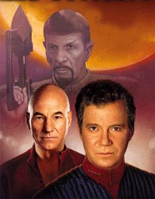
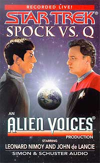
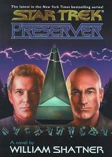
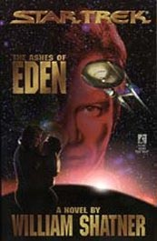
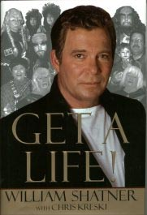

|
por Gustavo Leo
 Se
voc leu a primeira coluna que escrevi para este site, sabe da
minha profunda decepco com o atual estado criativo e
administrativo do franchise hollywoodiano conhecido como Jornada
nas Estrelas, por conta do todo-poderoso produtor Rick Berman. Se
voc leu a primeira coluna que escrevi para este site, sabe da
minha profunda decepco com o atual estado criativo e
administrativo do franchise hollywoodiano conhecido como Jornada
nas Estrelas, por conta do todo-poderoso produtor Rick Berman.
Apesar dos preparativos (nada bons, na minha opinio) de um novo
filme e uma nova srie para o ano que vem, a verdade que
Berman est cansado e estressado, aps 15 anos vivendo no sculo
24. E se ele no mudar sua atitude ou tomar um calmante, deve
levar o franchise ao colapso e ao abandono em um futuro no muito
distante.
Ou, pelo menos, ir levar ao final o seu reinado como o
"poderoso chefo" de Jornada, um cargo que caiu em seu
colo quase por acidente aps a aposentadoria de Gene Roddenberry
(por problemas de sade) e de Maurice Huxley (um ex-produtor de
"Miami Vice" e criador dos Borgs, que queria mais ao
na srie e acabou em conflito com os "ideais"
pacifistas de Roddenberry) em 1989.
Sozinho no comando e com a autonomia dada pelo estdio, Berman
contratou gente de talento, aumentou a audincia e a aceitao
dos trekkies que torciam o nariz para uma Enterprise sem Kirk ou
Spock, barateou os custos de produo da srie e comeou a
dominar o franchise em todos os fronts: de produtor-executivo de A
Nova Gerao a partir do terceiro ano, passando por co-criador e
produtor das sries Deep Space Nine e Voyager, e acabando com um
contrato milionrio como produtor e co-roterista dos ltimos trs
filmes de cinema (um baita de um salrio que ele espera continuar
a receber ao assumir, no ano que vem, essas mesmas posies, no
prximo filme e na nova srie de TV).
No se pode negar que Berman a pea principal na transformao
de Jornada, que passou de srie cult e fenmeno pop galinha
de ovos de ouro da Paramount e principal fonte de renda do estdio.
Foi graas a Berman que talentos como Michael Piller, Jeri
Taylor, Ron Moore, Ira Behr, Robert "Andromeda" Wolfe e
Brannon Braga se juntaram ao franchise e a revitalizaram
criativamente. Mas note que todos esses talentos acabaram por se
desentender com Berman e abandonar Jornada e a Paramount, restando
para titio Rick apenas a companhia do seu pupilo menos criativo,
Brannon, apelidado por seus colegas de "Mini-Rick".
Coloque a culpa em Xena e Arquivo-X, na super-exposio de
Jornada na TV (quatro sries sendo reprisadas ao mesmo tempo,
fora os episdios inditos), na falta de popularidade da UPN ou
simplesmente admita que os roteiros de Voyager no so mais
nenhuma Brastemp.
De uns anos pra c as coisas mudaram no galinheiro e a galinha
est colocando cada vez menos ovos de ouro. Ou seja, a audincia
despencou, as bilheterias no so mais as mesmas e at os
trekkies mais fanticos pelas novas geraes passaram a
criticar os novos seriados, pedindo a cabea de Berman numa
bandeja de prata e uma mudana na equipe de produo da srie
(leia-se: uma volta dos talentos que se foram e no voltam mais).
 Os
mais saudosistas e afoitos pedem a volta de dois nomes que
qualquer trekkie ou simples f desavisado conhece: William
Shatner e Leonard Nimoy. Justamente as duas ltimas pessoas no
mundo com quem Berman gostaria de fazer negcio --nem que a vida
de Jornada (para no dizer seu salrio) dependesse disso. Mas
por qu? Essa, caro leitor, uma longa histria.
O ano era 1991 e parecia o comeo de uma linda amizade: Leonard
Nimoy produzia o ltimo filme da srie original no cinema,
"Jornada nas Estrelas VI - A Terra Desconhecida",
enquanto Berman produzia o quinto ano da Nova Gerao, ento no
pico de sua popularidade.
Os dois, famosos e bem-sucedidos, acabaram por ficar amigos e
fizeram uma parceria, no intuito de um ajudar no projeto do outro.
Berman cedeu a Nimoy o ator Michael Dorn (ator que interpreta Worf)
para uma participao especial no filme, que fazia diversas
referncias nova serie, e Nimoy cedeu a si mesmo e ao ator
Mark Lenard (Sarek, que tambm estava no filme) a Berman,
aparecendo como o embaixador Spock em dois episdios especiais,
que por sua vez faziam diversas referncias ao roteiro do filme,
que estava prestes a estrear.
Ou seja, um ajudou a fazer propaganda do produto do outro, algo
raro na poca, j que Srie Clssica e A Nova Gerao at
ento permaneciam como entidades distintas uma da outra. A partir
da, referncias aos personagens clssicos apareceram aos
montes na Nova Gerao (at James Doohan fez uma participao
em um episdio do sexto ano chamado "Relics") e at os
personagens de Kirk e do embaixador Spock foram citados de forma
importante e reverencial em diversos episdios da Nova Gerao
("Face of the Enemy", "Lower Decks") e at de
Deep Space Nine ("Crossover").
Foi o comeo de uma linda parceria entre as duas geraes de
produtores, que, como tudo em Hollywood, no ia durar muito,
acabando vitma dos egos e das maquinaes que pupulam neste
lugar mgico e ftido chamado Los Angeles. O que nos leva ao ano
de 1993.
Chegou a vez de Berman produzir um filme de cinema de Jornada.
Devido a essa simbiose que nesse ponto as duas sries (e seus
respectivos produtores) j possuam, Berman decidiu fazer um
filme que inclusse o mximo de personagens da srie original,
criando assim uma transio da velha para a nova gerao.
Esperto, ele chamou seu amigo Nimoy para dirigir o filme, alm de
lhe oferecer uma ponta como Spock nos primeiros quinze minutos. O
resto dessa histria todo mundo sabe: Nimoy leu o roteiro, no
gostou de como os personagens da Srie Clssica eram tratados
como coadjuvantes, alm de repudiar a maneira como Kirk morria no
final. Resultado: ele deu de ombros a seu amigo Berman.
Na poca, Nimoy deu em diversas entrevistas a desculpa de que no
queria dirigir ou participar do filme porque o papel de Spock era
pequeno demais e suas sugestes para a melhoria no roteiro na
agradaram a Berman-- conta outra, Spock! Em Jornada III ele topou
aparecer s em um minuto e meio, em um filme cujo roteiro no
era nenhuma obra-prima, mesmo assinado pelo talentoso Harve
Bennett.
logico que Nimoy no queria dar sugestes no roteiro de Moore
e Braga, ele queria reescrever a coisa toda. Como William
Shatner conta em suas segunda autobiografia, "Jornada nas
Estrelas - Memrias dos Filmes", todas as suas sugestes
--como o personagem de Antonia e o modo como Picard convence Kirk
a sair do Nexus-- foram aprovadas por Berman e seus roteristas. E
todo mundo sabe que Shatner bem menos diplomtico que Nimoy.
Desesperado e com data marcada pra comear as filmagens (tendo
que aproveitar os cenrios da srie de TV antes que eles fosses
demolidos), Rick Berman (com a ajuda de Ron Moore e Brannon Braga)
substituiu Spock e McCoy por Scotty e Chekov (na verdade, DeForest
Kelley recusou a participao por problemas de sade) e a direo
foi entregue ao diretor da srie de TV, David Carson.
O resultado todo mundo conhece: o filme "Jornada nas Estrelas
- Generations", amado prouns, odiado por outros (ok, eu
adorei o filme, mas no olhe pra mim, eu no sou um trekkie).
Da pra frente, a relao Berman/Nimoy foi se deteriorando a
cada passo. Para o filme seguinte, at ento chamado de
"Jornada nas Estrelas - Ressurection" (mais tarde
alterado para "First Contact"), Berman chamou Nimoy para
o cargo de "consultor criativo" (algo que Roddenberry
foi nos filmes, do II at o V), mas de novo Nimoy teve problemas
com o roteiro e com a produo (dizem que Nimoy achou o tom do
filme muito violento, no aprovou o uso dos Vulcanos no final e
ainda queria de novo a incluso de personagens da Srie Clssica
na histria --o cara teimoso).
Assim sendo, mais uma vez uma quase-parceria entre os dois
veteranos produtores foi para o brejo. E para piorar a situao,
com a aproximao dos 30 anos da srie, Nimoy comeou a
criticar veementemente tanto Voyager quanto Deep Space Nine (e
suas respectivas faltas de popularidade) na imprensa.
E parece que a falta de homenagens que a Srie Clssica recebeu
nesse aniversrio irritou no s Nimoy mas tambm outros
atores da srie original, que achavam que parecia a festa dos 30
anos das novas sries e no da clssica, essa sim com 30 anos
de idade.
Por isso, talvez, Nimoy tambm tenha resolvido furar com Berman
em outras ocasies: quando, em fevereiro de 1996, o ator (e
trekkie) Jimmy Smitts (de "Nova York Contra o Crime" e
"Star Wars - Episode 2") entregou a Berman e a Majel
Barrett Roddenberry, ao vivo na rede TNT, o premio Sindicato dos
Atores pela comemorao dos 30 anos do "legado de
Gene", l estavam no mesmo palco todo os elencos da Nova
Gerao, Deep Space Nine e Voyager (at Will "Wesley"
Wheaton e Avery "Sisko" Brooks, aversos a esse tipo de
coisa, compareceram).
Da Clssica estavam apenas George Takei (fazendo o sinal de
"vida longa e prspera", logico), Nichelle Nichols e
Walter Koenig. Em setembro do mesmo ano, no especial de gala
"Star Trek 30 Years and Beyond" (disponvel em vdeo
nos EUA e exibido ao vivo pela UPN com apresentacao de --ugh!--
Ted Danson), Nimoy foi o nico ator das quarto sries (alm de
Patrick Stewart) a no comparecer na comemorao (mandando um
recado ao vivo da Frana, recado esse que foi sabotado por
interferncia subespacial. Seria Berman?).
Depois de tanto "toma-l-d-c", era lgico que l
por 1998, Mr. Berman que j estava de saco cheio de Mr. Nimoy e
nem queria ver suas orelhas, pontudas ou no. E Rick soube dar o
troco.
 Quando
Nimoy criou uma empresa chamada "Alien Voices", com o
ator John de Lancie (Q) para a produo de vdeos e CDs usando
os atores de Deep Space Nine e Voyager em dramatizao de clssicos
da fico cientfica (alm do CD especial "Spock Vs
Q"), de repente, de Lancie, que at o momento fazia o papel
de Q em aparies especiais em Voyager, nunca mais apareceu na srie
(ou em qualquer produo de Jornada, seja DS9 ou os filmes pra
cinema).
Dizem as ms linguas que Berman no gostou nada de de Lancie ter
se tornado scio de Nimoy, e resolveu boicot-lo em Voyager.
Agora, aps passar cinco anos na geladeira, o personagem Q vai
voltar, no stimo ano de Voyager, em um episdio intitulado
"Q Two" (falam por a que o afastamento de Berman e
Braga de Voyager e o novo regime imposto por Ken Biller tem algo a
ver com o retorno de Q, ou melhor, de Lancie. Coincidncia?)
E quanto ao boicote de Berman pessoa de Nimoy (sem falar no
personagem Spock), tudo ficou ainda mais claro em 1998, durante a
ltima temporada de DS9: Ron Moore, f de carteirinha da Srie
Clssica e um dos melhores (seno o melhor) roterista de DS9,
resolveu escrever o ltimo episdio da saga do "Mirror
Universe" (que j havia rendido a DS9 quatro episdios
passados naquele universo paralelo visto pela primeira vez no
episodio "Mirror Mirror", da Srie Clssica) e
convidou Nimoy a reprisar o papel do Spock de barba do universo
alternativo, um final de ouro para mais uma das sagas de DS9.
Nimoy aprovou a idia, o produtor-executivo Ira Behr aprovou a idia
e... Berman cancelou tudo, obrigando a equipe a terminar a saga
com um episdio de Quark lidando com o Grande Nagus no universo
paralelo. Uma grande decepo para Moore (que ventilou toda a
sua frustrao com Berman, com seu desdm pela Srie Clssica,
numa entrevista recente ao Fandom.com). No caso de Nimoy, foi o ltimo
prego no fim de sua relao com Berman.
J no caso de Bill Shatner, a histria do surgimento e do fim da
amizade dos dois muito mais simples. Durante as filmagens de
Generations, Shatner (com medo de perder seu maior ganha-po)
bolou uma histria em que Kirk era ressuscitado pelos Borgs e
vinha se vingar do capito Picard e da Federao. Shatner levou
essa historia a Berman e o produtor disse ter gostado. Pediu que
Shatner escrevesse um roteiro da histria, o que foi a primeira
coisa que Shatner deve ter feito ao voltar do deserto de Nevada,
onde se filmou (duas vezes) a cena da morte de Kirk.
O ator contou, em uma entrevista que deu revista "Cinescape",
que levou seu roteiro Paramount e todos l --de Berman a
Sherry Lansing-- gostaram da idia e prometeram retornar um
telefonema a Shatner logo que possvel. Eu no preciso dizer que
Bill est esperando esse telefonema at hoje.
 Inconformado,
Shatner se uniu aos super talentosos escritores Judith e Garfield
Reeves-Stevens e adaptou as idias do roteiro em uma srie best
seller de seis livros, que narram a saga de um capito Kirk
ressuscitado no sculo 24 e se unindo aos j centenrios Spock
e McCoy, junto com a tripulao da Enterprise-E.
Os livros foram um sucesso absoluto e so o piv dos
descontentamentos de Shatner com Berman. Parece que apesar de no
querer adaptar os livros de Shatner para TV ou cinema, Berman
um tremendo f de Bill, porque diversos elementos dos livros comearam
a aparecer em episdios de Voyager e nos filmes da Nova Gerao
para cinema, fato que no passou em brancas nuvens para Shatner.
E antes que algum soletre a palavra "plgio", vamos
dar uns exemplos. No episdio "Mortal Coil", Neelix
morre e ressuscitado de uma maneira idntica de Kirk nos
livros: atravs da insero de nanossondas Borgs em suas
corrente sangnea e em seu crebro.
J em "Dark Frontier", a cidadela espacial que a Rainha
Borg usa como quartel-general dos Borgs uma copia deslavada da
descrio de Shatner do mundo Borg no quadrante Alfa em "O
Retorno do Capito Kirk" ("The Return"), o mesmo
livro que Berman e a Paramount recusaram como o nono filme da srie.
 E
como se tudo isso j no bastasse, vamos comparar o roteiro do
primeiro livro de Shatner com o enredo do ltimo filme da Nova
Gerao. Em "Star Trek - Ashes of Eden", que Shatner
(e os Reeves-Stevens, sejamos justos) escreveu em 1995, o capito
Kirk desobedece ordens da Frota Estelar e vai defender o planeta
Chal, que guarda o segredo da juventude eterna, contra o
comandante da Frota, o almirante Drake, que se uniu aos Klingons
para tomar o planeta fora. Mas Kirk se une a Teilani, uma lder
nativa do planeta por quem ele se apaixona (e com quem casa no
quinto livro da saga). Teilani, apesar de aparentar ser bem mais
nova, bem mais velha que ele. Junto dela e de sua velha tripulao,
Kirk derrota Drake e liberta Chal.
Em "Jornada nas Estrelas - Insurreio", roterizado
por Berman e Michael Piller em 1998, o capito Picard desobedece
ordens da Frota Estelar e vai defender o planeta Baku, que guarda
o segredo da juventude eterna, contra o almirante Dougherty, que
se uniu aos Son'a para tomar o planeta fora. Picard se une a
Anij, uma lder dos Baku por quem ele se apaixona, que apesar de
aparentar ser mais nova bem mais velha que ele, e junto com sua
tripulao, derrota os Son'a. Coincidncia? No para Shatner,
j que em seu livro "Star Trek - Dark Victory", lanado
um ano aps a estria de "Insurreio", Picard
compara como essas duas misses foram bem... ahammm... similares.
Pra quem conhece os livros de Shatner (e a maneira como ele trata
o relacionamento Kirk/Picard), o recado de Bill estava bem dado.
E pra no perder o hbito, Shatner topou estrelar a comdia
independente "Free Enterprise", um filme divertido no
qual ele, alm de mais uma vez fazer o seu famoso discurso "get
a life... it's only a TV show" (dessa vez seriamente),
aproveitou para dar um toque nos novos rumos do franchise. Uma das
melhores cenas fica a cargo de um dos personagens principais, que
grita para a namorada: "I fucking hate the next generation!!!"
 E
a vingana final de Bill chegou este ano, em sua ltima
biografia best seller, intitulada "Get A Life". No ltimo
captulo, ele critica o estado atual de Jornada e comenta
ironicamente a to falada decadncia do franchise.
Por isso, apesar das vrias campanhas para trazer Kirk, Spock ou
Sulu, ou das preocupaes dos trekkies com a recente falta de
criatividade no franchise (que depois dos recentes rumores sobre
Jornada X e a nova srie parece ter aumentado consideravelmente),
no contem em ver atores da Srie Clssica na frente ou atrs
das cmeras na comemorao dos 35 anos de Jornada em 2001. E no
convidem as duplas Rick "Doctor Evil" Berman e Brannon
"Mini-Rick" Braga pra mesma festa que Kirk e Spock.
|